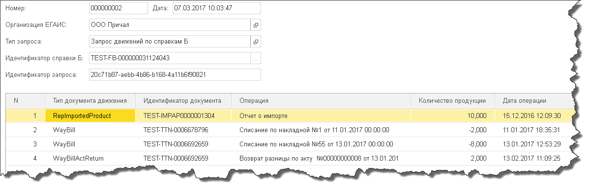

Сервисные функции ЕГАИС¶
Запрос движений по справкам Б¶
УТМ может возвращать движения по указанной справке.
Для этого выберите в поле “Тип запроса” укажите “Запрос движений по справкам Б” и выберите справку Б либо из списка выбора, либо вручную написав номер справки в поле.
Запишите документ и нажмите кнопку “Отправить запрос”.

Дождитесь ответа из ЕГАИС.
После нажатия кнопки обмена с ЕГАИС в протоколе, если ответ на запрос пришел, в табличной части документа будут показаны движения по справкам Б.

Также вы можете по двойному нажатию на строку посмотреть документ, который сделал движение этой справки, если он есть в информационной базе.